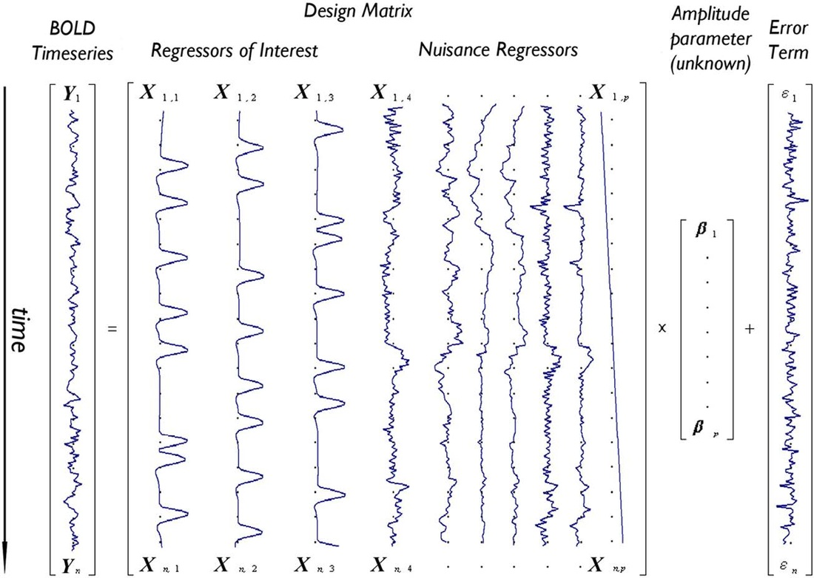

FAQ
Space, template and atlas
Q: What is the difference between “space”, “template” and “atlas”?
“Space” refers to the background space that one study the brain. Less generally, it refers to the boundaries around the brain. There are two big categories:
Native (individual) space: where your individual brain data is at (and varies from subject to subject)
Common space: enables the comparison between different subjects’ brains. There are two famous common space: the Talairach space and the MNI space.
“Template” is a standard brain in a specific space. For example, the MNI space has the following templates (download here):
MNI305: 305 normal brains were linearly registered to 241 brains that had been registered to the Talairach atlas.
MNI152
MNI152 linear: 152 normal brains linearly registered to the 305 space.
MNI152 nonlinear 6th gen: 152 normal brains non-linearly registered to the 305 space.
MNI152 nonlinear 2009 (three versions: 2009a, 2009b and 2009c)
For atlas (aka., “parcellation”), it refers to how we partition the brain into different regions. It is a map indicating which voxels belongs to which structure. It can be defined on any templates. Application-wise, an atlas, associated with a certain template, usually comes in two types:
Label atlas: a 3D image where each voxel contains the value corresponding to that voxel's classification label.
Probabilistic atlas: a 4D image where each volume contains voxel values 0 to 100 indicating the probability that a given voxel is classified as belonging to the structure represented by that volume.
(Source/Suggested further reading: [link 1], [link 2])
 |
Q: Should I register the atlas (in common space) to the subject's brain, or the opposite?
fMRI
Q: How to understand the relationship between stimulation, HRF and BOLD signal?
Q: What's the point of using GLM in fMRI analysis?
In short, General Linear Model separates the raw signal into different ingredients. For EACH VOXEL, the model is written as \(\mathbf Y=\mathbf{X}\boldsymbol{\beta+\varepsilon}\), or more detailed,
\[ \begin{bmatrix} Y_1 \\ \vdots \\ Y_n \end{bmatrix}_{n\times 1} = \left[ \begin{array}{ccc|ccc} \mid & & \mid & \mid & &\mid \\ \mathbf{X}_{1} & \cdots & \mathbf{X}_{p} & \mathbf{X}_{p+1} & \cdots & \mathbf{X}_{m}\\ \mid & & \mid & \mid & &\mid \end{array}\right]_{n\times m} \begin{bmatrix} \beta_1 \\ \vdots \\ \beta_m \end{bmatrix}_{m\times 1} + \begin{bmatrix} \varepsilon_1 \\ \vdots \\ \varepsilon_n \end{bmatrix}_{n\times 1} \]
where \(n\) is the number of time point (with time going down the vector vertically), and \(m\) is the number of variables (which contain \(p\) variables that we are interested in, and the rest \(n-p\) we don't care but they do affect the BOLD times series).
The following figure provides a very good illustration. In this figure, the design matrix \(\mathbf X\) includes 10 effects: 3 of interest (responses under task A,B,C respectively) and 7 confounders (6 motion parameters and 1 linear drift). For example, if task A is about speech, with the HRF for speech as the first column in the design matrix: \(\mathbf{X}_{1}=[X_{11}, \cdots, X_{n1}]^{\top}\), the corresponding coefficient \(\beta_1\) tells how strong this particular voxel responds to task A.
|  |
This is the ideal case. But in reality, we will never know the HRF. The only thing we have to approximate the HRF is the stimulation/task (designed by the experimenter), which is represented as a square wave (i.e., \(\mathbf X_i\) is a series of 1s and 0s).
Addition Note: Even if we are analyzing resting-state fMRI (instead of the task-based), it is still worth using GLM to eliminate the confounders (motions, drifts, etc.). That is, we don't add in any regressor of interest, but just add in the nuisance regressors, and we pick the error term for further analysis.
(Source/Suggested further reading: [link 1], [link 2], [link 3])
Q: Which one is better, Surface-based connectivity or Volume-based connectivity?